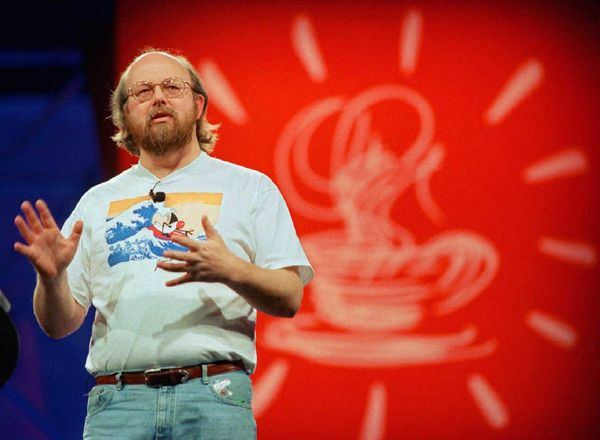

Интересные факты
Факты о создателе Java и герое Силиконовой долины – Джеймсе Гослинге.
- Джеймс Гослинг создал Java после прочтения книги Уильяма Вульфа «Дизайн оптимизирующего компилятора». Гослинг описывает ее как первую книгу по компьютерной науке, из тех, что он читал, которая меньше была ориентирована на математику и больше на разработку кода.
- Гослинг обладатель диплома бакалавра в области компьютерных наук, а также магистр и доктор философии в Университете Карнеги-Меллона
- Гослинг начал писать программное обеспечение с подросткового возраста. Он даже рылся в мусорном баке за пределами компьютерной лаборатории Университета Калгари, чтобы добыть скудные вычислительные ресурсы, которые были списаны за ненадобностью. Будучи в старшей школе, Джеймс Гослинг написал программу для физического факультета своего университета, которая была предназначена для приема телеметрических данных со спутника Isis 2 на канадской космической программе.
- В этом году Джеймсу Гослингу исполнилось 70, но он не собирается уходить на пенсию. «У меня никогда не закончится проект. Я имею в виду, что я мог бы жить до 1000 лет, и я бы все еще не видел конца своего списка дел» - говорит он. Гослинг любит цитировать Леонардо да Винчи: «Работа над произведением искусства никогда не может быть закончена, а может быть только заброшена».
